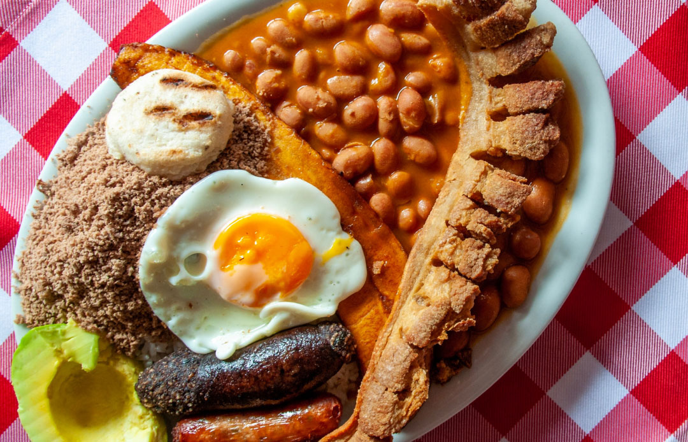

Receta de bandeja paisa
La bandeja paisa es, sin duda, uno de los platos más reconocidos de la
gastronomía colombiana. Es tradicional de las tierras antioqueñas, pero se
consume en todo el país e incluso en el extranjero, donde ha llegado de la
mano de migrantes colombianos.

¿Que ingredientes se necesitan para hacer una bandeja paisa para 6
personas?
- 3 Tazas de frijoles cargamanto
- Rojos
- 2 Libras de carne molida
- 2 Libras de chicharron
- 2 libras de pulpa molida
- 6 chorizos
- 6 hevos
- 1 libra de arroz
- 3 platanos maduros
- 4 cebollas grandes
- 4 tomates
- 1 zanahoria mediana
- Medio platano verde
- Aceite
- Sal a gusto
Prepara el hogao picando finamente las cebollas y los tomates
-
En una sartén con un poco de mantequilla y ajo al gusto, ponlos a
sofreír durante diez minutos.
-
Para la cocción de los fríjoles utiliza la olla exprés, esto te
ahorrará un poco de tiempo.
-
Agregar y cubrir con agua y échales la mitad del hogao, medio plátano
verde y la zanahoria mediana partida en trozos. Déjalos pitar
aproximadamente por media hora. Después que hayan pitado, sácales la
zanahoria, el plátano y una taza de agua y licuar.
-
Agrega esta mezcla a los fríjoles nuevamente y ponlos a fuego medio
–bajo a espesar.